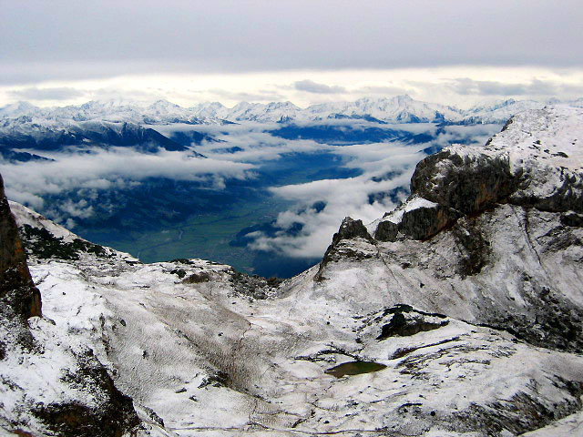
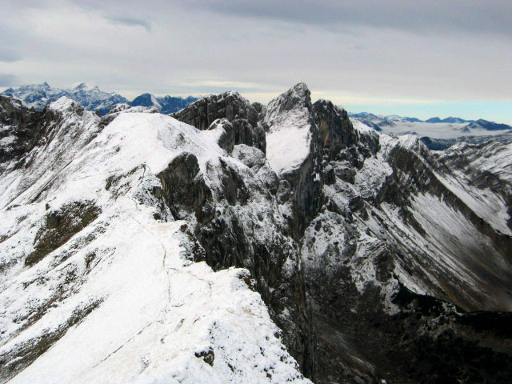
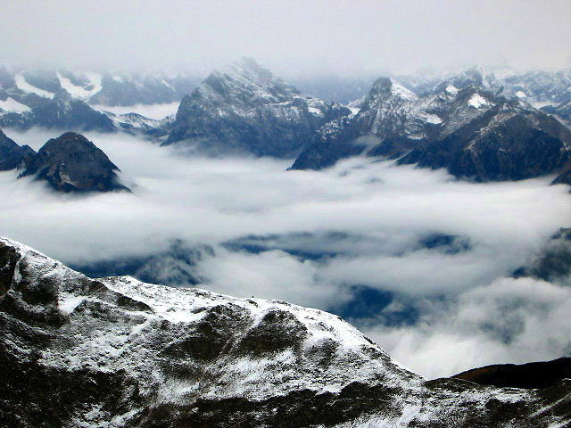
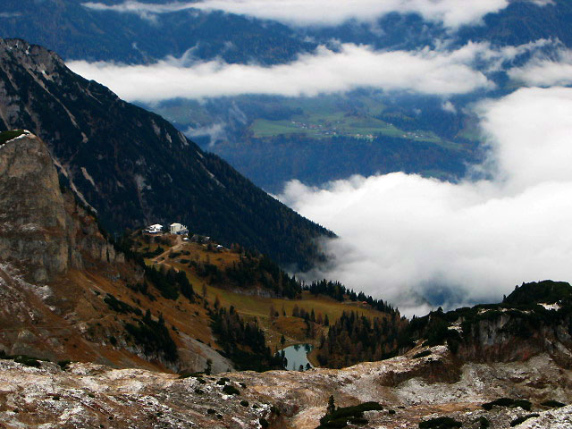
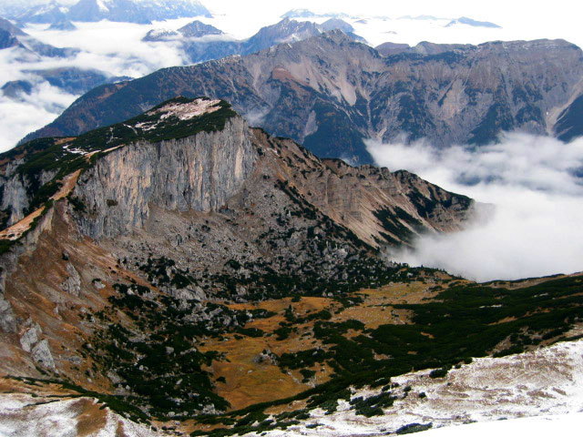
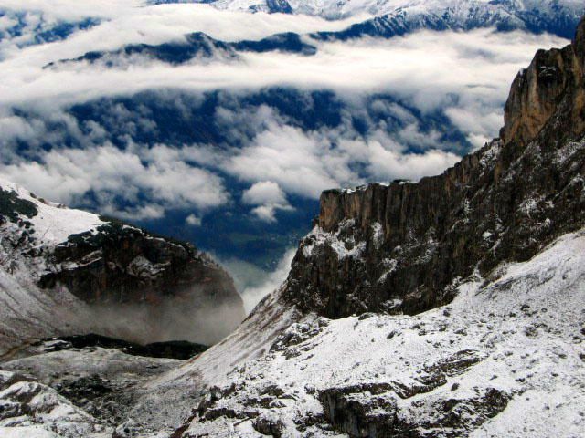
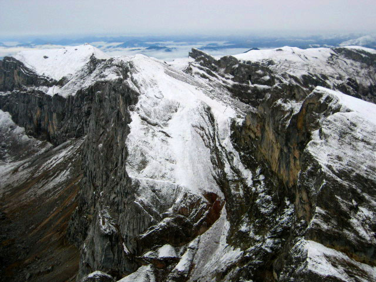
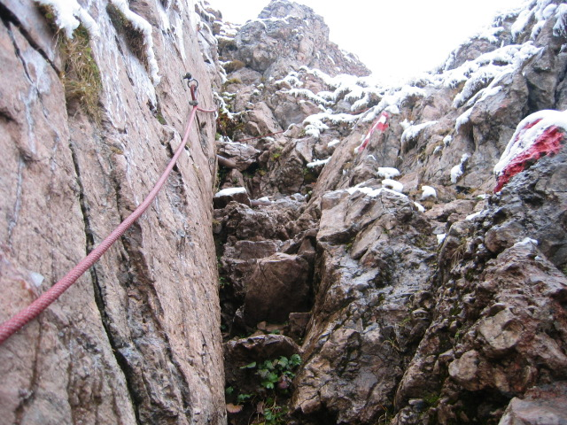
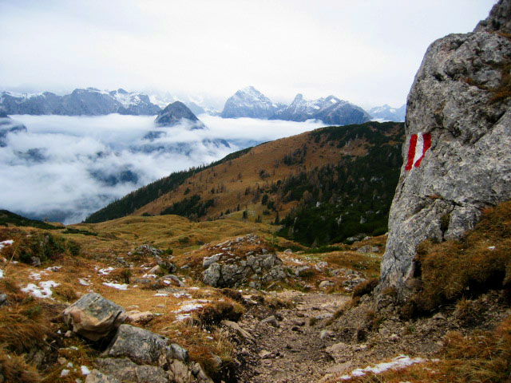
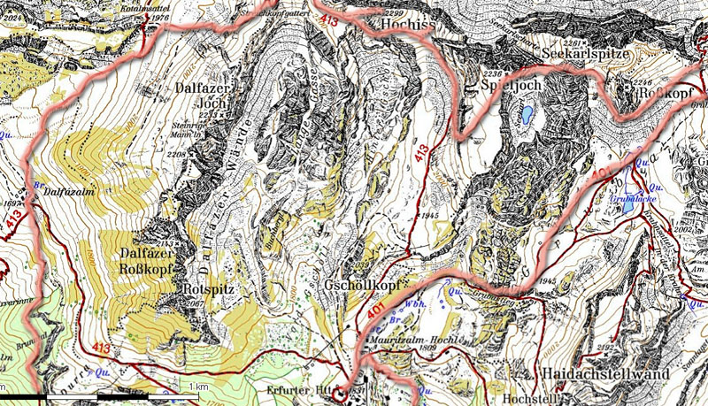

Rofanspitze
It took quite a while the night before to try and match up a hike that might be doable in bad weather, had maximum views, had the possibility of a loop trip, along with easy train access. In the winter (like, now), many buses to the mountains quit running. Or rather, they say “see you for ski season!” and I’m in the wierd off period. Finally I decided to go to this place called The Brandenberg Alps, or the Rofan Range. It’s a compact, cute little “range”, with the high, snowy Zillertel Alps to the south, and the imposing, rocky Karwendel Range to the west.
The train was fast, taking 1.5 hours to Jenbach. There, I thought to maybe walk to Maurach, but I got lazy and took a taxi. Had I known it would cost 14 Euros I might have walked! It’s only like 4 kilometers, and there was no traffic. That cab driver apparently had to make his whole morning on my fare. The cab dropped me off at the Rofanseilbahn, a lift that takes you some 800 meters up to the Erfuhrter Hut. “Es kostet 14 Euro” said the dour woman. “I’ll be right back” I said, and quickly snuck away to walk up. Seriously, cash goes through my hands like water here, time to get a little more miserly.
Apparently there was lots of snow up at the hut, and I thought that if it was too snowy for me to hike, at least I’d make the 2500 foot hike up there. No sooner did I think this than did the steep trail start kicking my butt. But I stuck with it, and soon the foggy murk opened up a bit to see mountains around me. The rocks in the trail were so slippery, that it was like walking on ice. I wished for hiking poles for the first of many times that day.
After an hour or so, I was standing at the hut: “Erfuhrter Hutte geschlossen!” said the sign. What? No busty waitresses and red-faced beer drinkers? There was another restaurant but it looked expensive so I stayed away. I thought I could fill my water bottle in the bathroom, but it had a “no drinking” sign over the sink. I later wished I did it anyway, because it’s silly to run a whole day on 3 cups of water!
So I wandered along a trail towards the Rofanspitze, following behind two rock climbers. I wondered what they were going to do in the snow? Later I found out that this little range is peppered with many rock climbs. On the hike, I mostly wandered among snowy hills, just seeing one big rock face called the Rosskopf. But once on the summit of the Rofanspitze, I could see the north walls, which fell steeply down to heather slopes. It reminded me of the first time seeing the north walls of the southern Pickets after the “relatively gentle” (ha!) south side. These weren’t as big, but they were even steeper. I didn’t feel my usual lust for the scariest looking face, but I enjoyed the dramatic view.
The map showed a dotted line connecting high ridge points, and so I followed on the crest of the ridge, which had some real “wow” moments. But I was disturbed by the slippery rocks and thin layer of snow. When the trail went down steeply, I had to be really careful. Hiking poles would have helped. So I left the high ridge and followed trail around the south side of the Rosskopf. Climbing back up, I started encountering really steep exposed sections of trail that had little handlines. I was grateful under the current slippery conditions!
“Where are all the peeps?” I thought. So far, it was like a hike in Washington, nobody around at all.
I kept threading through and occasionally on the summits, finally deciding to continue my traverse to a place called Dalfazalm and then go down to the town. I was getting pretty tired and thirsty for sure. Finally I saw another crazy person out in this weather. We said hello. Or rather, I said “Gross Gott!” and he said something, kind of a half-question (“semmeln?”). I wasn’t ready for that so I just kept the smile frozen on my face and glid by. “Damn” I thought. Social encounters can be awkward with a language barrier, sigh.
Back on my solitary way I entered my favorite part of the hike: a brown meadow with impressive views out to the Karwendel. It was snowing lightly, and those peaks looked fierce. While around me was a picturesque valley, which I’d love to farm in if I lived in the year 1483.
Below this I made my way without incident back to the Seilbahn station. Getting home was tough, because although I found a bus, I still ended up waiting almost 2 hours for the next train. “I would have been home by now, if I had a car!” I thought with some frustration. But eventually the train came, and then the now-familiar U5 from Hauptbahnhof to good ol’ Friedenheimerstrasse and home.
|
 The Inn valley from the Rofanspitze |
|
 Hochiss seen from the Rofanspitze |
|
 The mighty Karwendal Range |
|
 The Erfurter hut from the northwest |
|
 The Kotalm seen from the Streichkopf |
|
 Looking down from the Grubascharte |
|
 The Spieljoch has huge vertical cliffs |
|
 The handline was appreciated on the steep, slippery rocks! |
|
 Meadows near Dalfazalm |
|
 Some of my route |
{kind=link}
{kind=link}
{kind=link}
{kind=link}
{kind=link}
{kind=link}
{kind=link}
{kind=link}
{kind=link}
{kind=link}